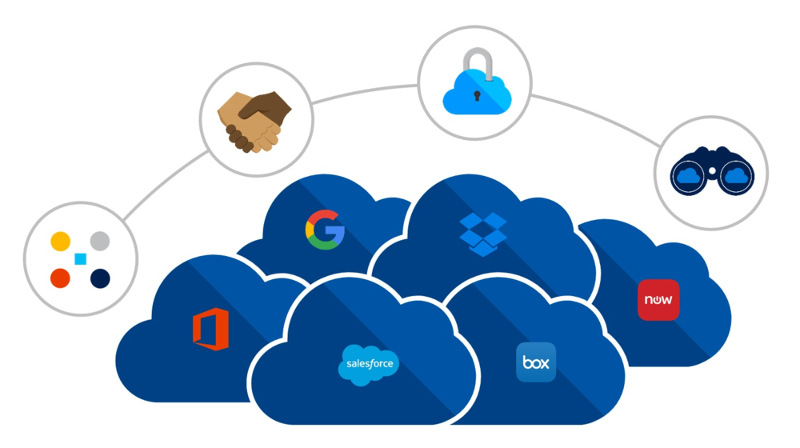

Desarrollo de Aplicaciones para la Nube
¿Qué son las Aplicaciones para la Nube?
Las aplicaciones para la nube son aquellas diseñadas y desarrolladas específicamente para ser ejecutadas en entornos de computación en la nube. Estas aplicaciones aprovechan los servicios y recursos ofrecidos por proveedores de nube como AWS, Azure o Google Cloud Platform para escalar, almacenar datos, y realizar tareas de procesamiento de manera eficiente y rentable.
Las aplicaciones para la nube suelen seguir arquitecturas distribuidas y estar diseñadas para ser altamente escalables, seguras y disponibles. Esto permite a las organizaciones aprovechar al máximo los beneficios de la nube, como la elasticidad, la capacidad de recuperación ante desastres y la capacidad de acceso global.
Además, las aplicaciones para la nube suelen estar construidas utilizando tecnologías y herramientas modernas como contenedores, microservicios y servicios gestionados de la nube, lo que permite a los equipos de desarrollo crear y desplegar aplicaciones de forma rápida y eficiente.
Recomendaciones
Al desarrollar aplicaciones para la nube, es fundamental tener en cuenta factores como la seguridad, la disponibilidad, el rendimiento y la escalabilidad, ya que estas aplicaciones suelen ser utilizadas por un gran número de usuarios y están sujetas a diferentes tipos de amenazas y riesgos.
Proceso
El proceso de desarrollo de aplicaciones para la nube generalmente incluye los siguientes pasos:
- Definición de requisitos: Identificar los requisitos funcionales y no funcionales de la aplicación.
- Diseño de la arquitectura: Diseñar la arquitectura de la aplicación, teniendo en cuenta consideraciones como la escalabilidad y la disponibilidad.
- Desarrollo: Escribir el código de la aplicación utilizando las tecnologías y herramientas adecuadas.
- Pruebas: Realizar pruebas unitarias, de integración y de rendimiento para garantizar el correcto funcionamiento de la aplicación.
- Despliegue: Desplegar la aplicación en un entorno de nube utilizando herramientas de automatización como DevOps.
- Monitoreo y mantenimiento: Monitorear el rendimiento y la salud de la aplicación en producción y realizar actualizaciones y mejoras según sea necesario.
Ejemplos de Aplicaciones para la Nube
Algunos ejemplos de aplicaciones para la nube incluyen:
- Plataformas de colaboración empresarial como Google Workspace o Microsoft 365.
- Servicios de almacenamiento en la nube como Dropbox, Google Drive o OneDrive.
- Aplicaciones de gestión de proyectos y tareas como Trello o Asana.
- Plataformas de comercio electrónico como Shopify o Magento que utilizan la nube para escalabilidad y seguridad.
- Servicios de procesamiento de datos y análisis como Google BigQuery o AWS Redshift.